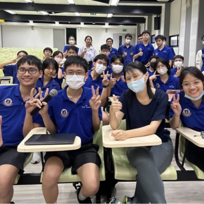

Mahidol Wittayanusorn School



Mahidol Wittayanusorn School, established in 1990 in Nakhon Pathom Province, is Thailand’s first specialized science high school, dedicated to nurturing talented students in science and technology. The school emphasizes advanced academic programs, research skills, and innovation, preparing students to excel in national and international science competitions. With its strong focus on creativity, critical thinking, and leadership, Mahidol Wittayanusorn School continues to develop young scientists and innovators who contribute to Thailand’s advancement in science, technology, and education.